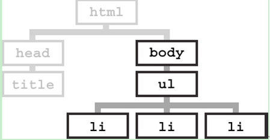

css有哪些属性可以继承？
分享人：王振
目录
1.背景介绍
2.知识剖析
3.常见问题
4.解决方案
5.编码实战
6.扩展思考
7.参考文献
8.更多讨论
1.背景介绍
了解css样式表的继承，我们先从文档树（HTML DOM）开始，文档树由HTML元素组成,文档树和家族树类似，也有祖先、后代、父亲、孩子、兄弟
css样式表继承指的是，特定的css属性向下传递到后代元素
2.知识剖析
对于一些可以继承的属性，可以只设置上级的CSS样式表树形，子级（下级）不用设置，会自动继承此CSS属性，可以减少CSS代码，便于维护。
那么有哪些属性可以自动继承呢
有继承性的属性：
1、字体系列属性
font：组合字体
font-family：规定元素的字体系列
font-weight：设置字体的粗细
font-size：设置字体的尺寸
font-style：定义字体的风格
font-variant：设置小型大写字母的字体显示文本，这意味着所有的小写字母
均会被转换为大写，但是所有使用小型大写字体的字母与其余文本
相比，其字体尺寸更小。
font-stretch：允许你使文字变宽或变窄。所有主流浏览器都不支持。
font-size-adjust：为某个元素规定一个 aspect 值，字体的小写字母 "x"
的高度与"font-size" 高度之间的比率被称为一个字体的 aspect 值。
这样就可以保持首选字体的 x-height。
有继承性的属性：
2、文本系列属性
text-indent：文本缩进
text-align：文本水平对齐
text-shadow：设置文本阴影
line-height：行高
word-spacing：增加或减少单词间的空白（即字间隔）
letter-spacing：增加或减少字符间的空白（字符间距）
text-transform：控制文本大小写
direction：规定文本的书写方向
color：文本颜色
有继承性的属性：
3、元素可见性：visibility 4、表格布局属性：caption-side border-collapse empty-cells 5、列表属性：list-style-type list-style-image list-style-position、list-style 6、设置嵌套引用的引号类型： quotes 7、光标属性：cursor 8、还有一些不常用的；speak，page等属性，暂不讲解；
所有元素可以继承的属性：
1、元素可见性：visibility
2、光标属性：cursor
内联元素可以继承的属性:
1、字体系列属性
2、除text-indent、text-align之外的文本系列属性
块级元素可以继承的属性:
text-indent、text-align
无继承的属性
1、display
2、文本属性：vertical-align
text-decoration
3、盒子模型的属性:宽度、高度、内外边距、边框等
4、背景属性：背景图片、颜色、位置等
5、定位属性：浮动、清除浮动、定位position等
6、生成内容属性:content、counter-reset、counter-increment
7、轮廓样式属性:outline-style、outline-width、outline-color、outline
8、页面样式属性:size、page-break-before、page-break-after
继承中比较特殊的几点
1、a 标签的字体颜色不能被继承
1、<h1>-<h6>标签字体的大下也是不能被继承的
因为它们都有一个默认值
3.常见问题
问题1：多种样式混合应用的优先级问题
问题2：font-size的继承问题
4.解决方案
当有多个规则都能应用于同一个元素时，权重越高的样式将被优先采用。
”important>内联 >ID>类 >标签 |伪类|属性选择 >伪对象 >继承 >通配符”
demo
font-size是可以被继承的。但是它的方式有一些特别。Font-size的子类继承的不是实际值，而是计算后的值。
下面是一个例子
<p>字体大小属性<em>继承特性</em>的演示代码</p>
p { font-size:14px;}
由于浏览器默认字体大小是16px，而p定义了字体14px，所以em继承了p的字体大小属性，也是14px；
p { font-size:85%;}
浏览器默认字体大小16px,而p定义了字体大小(16px X 85% = 13.6px). 13.6px这个值将被子元素em继承。
p { font-size:0.85em;}
浏览器默认字体大小16px,而p定义了字体大小(16px X 0.85 = 13.6px). 13.6px这个值将被子元素em继承。

body { font-size: 85%; }
h1 { font-size: 200%; }
h2 { font-size: 150%; }
浏览器默认字体大小16px,而body定义了字体大小(16px X 85% = 13.6px). 如果子元素没有指定字体大小13.6px这个值将被子元素继承。
5.编码实战
6.扩展思考
inherit关键字
inherit 关键字指定一个属性应从父元素继承它的值。
inherit 关键字可用于任何 HTML 元素上的任何 CSS 属性。
除了inherit关键字外，还有什么其他的关键字继承特性
在css3中新增加了几个继承特性
initial:用来设置css属性值为它的默认值，也就是浏览器默认设置的css属性值。
unset:一个属性定义了unset值，如果该属性是默认继承属性，该值等同于inherit，如果该属性是非继承属性，该值等同于initial
all: [ inherit | initial | unset ]: 最后，all是一个属性而不是一个值。你可以指定inherit、initial或者unset来影响所有的属性，例如重置所有CSS属性为浏览器默认：
7.参考文献
参考一：学习CSS的继承性
参考二：继承的技巧
8.更多讨论
鸣谢
感谢大家观看